결과물: Claude Code가 편집한 VSL
발표자 Ivan Bunin은 인력 회사를 운영하면서 자기 회사와 고객사의 광고 영상을 Claude로 편집하고 있어요. 터미널이나 VS Code가 아니라 Claude Code 데스크톱 앱만 써요. 세션을 여러 개 띄워 둘 수 있어서 더 편하다고 해요.
먼저 이날 오전에 만든 새 상품용 VSL을 보여 줘요. 로고와 장면이 화면에 튀어나오고, 애니메이션에 맞춰 효과음이 들어가요. 중간에는 Ivan의 B-roll과 고객 후기 영상이 섞여 있어요. 그 B-roll과 후기는 Ivan이 건네준 게 아니에요. Claude가 Google Drive에서 직접 찾아 어울리는 자리에 넣었어요.
얼마나 걸렸을까요
Claude에게 걸린 시간을 정리해 달라고 하자 왼쪽 같은 표가 나왔어요. 오른쪽 재생 화면이 완성된 VSL이고, 'What founders get' 카드 세 장이 그래픽으로 얹힌 부분이에요.
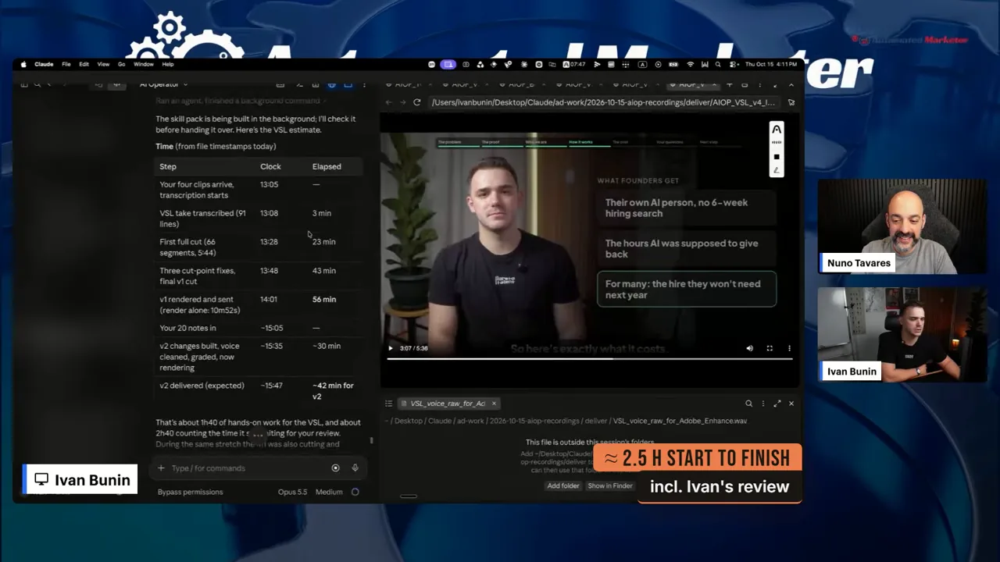
| 단계 | 시각 | 경과 |
|---|---|---|
| 클립 네 개 도착, 받아쓰기 시작 | 13:05 | — |
| VSL 테이크 받아쓰기 완료(91줄) | 13:08 | 3분 |
| 첫 전체 컷(66조각, 5분 44초) | 13:28 | 23분 |
| 컷 지점 세 곳 수정, v1 최종 컷 | 13:48 | 43분 |
| v1 렌더링·전달(렌더링만 10분 52초) | 14:01 | 56분 |
| Ivan의 메모 20개 도착 | 약 15:05 | — |
| v2 전달(예상) | 약 15:47 | v2에 약 42분 |
표 아래 문장은 직접 작업이 1시간 40분, 검토를 기다린 시간까지 합치면 약 2시간 40분이라고 적어요. Ivan은 말로는 '두 시간 반쯤'이라고 해요.
얼마나 들었을까요
비용 표는 항목마다 VSL에 무엇을 썼고 얼마였는지 적어 놨어요. 0달러가 아닌 줄은 ElevenLabs 두 줄뿐이에요.
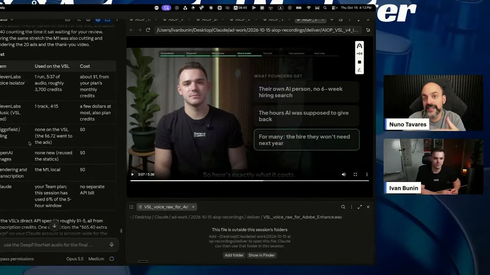
| 항목 | VSL에 쓴 것 | 비용 |
|---|---|---|
| ElevenLabs Voice Isolator | 1회, 오디오 5분 37초, 약 3,700크레딧 | 약 1달러(요금제 월 크레딧) |
| ElevenLabs Music | 1곡, 4분 15초 | 최대 몇 달러(요금제 크레딧) |
| Higgsfield | VSL엔 안 씀(6.72달러는 같은 날 광고들에 씀) | 0달러 |
| OpenAI 이미지 | 새로 안 만듦(기존 이미지 재사용) | 0달러 |
| 렌더링·받아쓰기 | M1 로컬 | 0달러 |
| Claude | Team 요금제, 이 세션이 5시간 한도의 6% 사용 | 별도 API(Application Programming Interface) 청구 없음 |
ElevenLabs는 목소리를 더 깨끗하게 하려고 쓴 거라 꼭 필요하진 않아요. 음악은 직접 끌어다 넣어도 되고, 음성 정리는 로컬로도 할 수 있어요. 진행자 Nuno는 영상 제작에서 가장 비싼 'AI 영상 생성'을 하나도 쓰지 않았다는 점을 짚어요.
원본 소스: 12분 재촬영과 고객 통화
편집 전 원본은 SD(Secure Digital) 카드에 든 12분짜리 촬영본이에요. 텔레프롬프터를 보며 같은 대목을 여러 번 다시 찍은 그대로라 반복이 많아요. Ivan은 파일 경로를 따로 알려 주지 않았는데, Claude가 카드에서 바로 찾아 왔어요.
두 번째 예는 고객과의 화상 통화예요. Fathom으로 녹화한 통화에 접근 권한을 주자, Claude가 고객이 한 말 중 흥미로운 대목을 골라 잘랐어요. 음악과 자막을 얹어 인스타그램 릴스 비율로 바로 올릴 수 있게 만들었어요. 아래 화면 오른쪽이 그 결과로, 고객 얼굴 위에 큰 따옴표 문장이 떠 있고 아래에 한 단어씩 강조되는 자막이 붙어 있어요.
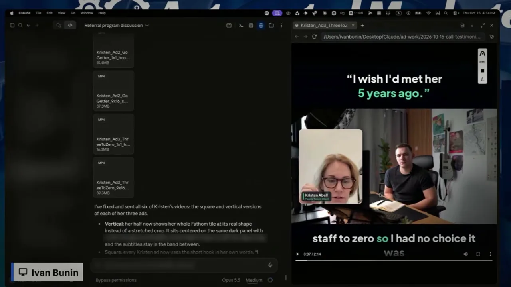
스킬 안에 든 것
Ivan은 편집하던 바로 그 채팅에서 Claude에게 API 키만 빼고 스킬을 zip으로 묶어 달라고 했어요. 편집 흐름, 긴 영상 처리, 토킹헤드 컷, 음성 다듬기가 다 들어 있어요.
시작은 프롬프트 한 줄
파일 이름만 알려 주고, 바로 시작하지 말고 계획부터 설명하라고 해요. 화면 아래쪽 주황 상자가 그 프롬프트예요.
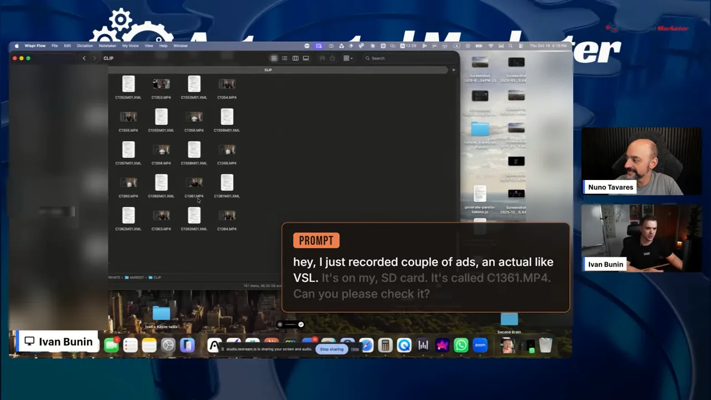
스킬은 세 부분이에요
영상이 정리한 그림은 컷 → 음성 → 그래픽 세 칸이고, 그 결과가 '내 영상' 위에 얹혀 내 컴퓨터에서 렌더링돼요. 그래픽 칸 아래에 HTML(HyperText Markup Language) + CSS(Cascading Style Sheets)라고 적힌 게 눈여겨볼 부분이에요.
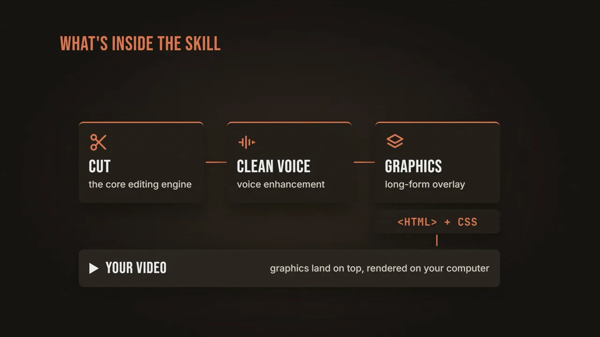
쓰는 도구는 모두 무료예요
Ivan은 같은 스킬을 ChatGPT에 넣고 어떻게 돌아가는지 설명해 달라고 했어요. 그 답에 나온 도구 표예요. 오른쪽 '소프트웨어 비용' 열이 Claude Code 한 줄만 빼고 전부 Free예요.
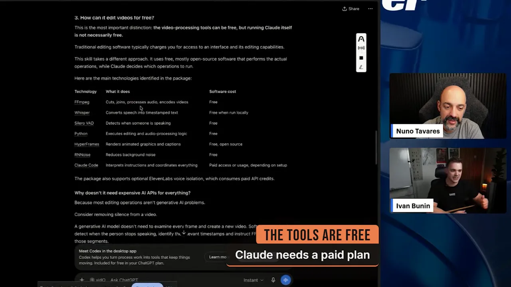
| 도구 | 하는 일 | 비용 |
|---|---|---|
| FFmpeg | 자르기, 붙이기, 오디오 처리, 인코딩 | 무료 |
| Whisper | 음성을 타임스탬프 붙은 텍스트로 | 로컬이면 무료 |
| Silero VAD(Voice Activity Detection) | 사람이 말하는 구간 감지 | 무료 |
| Python | 편집·오디오 처리 로직 실행 | 무료 |
| HyperFrames | 애니메이션 그래픽과 자막 렌더링 | 무료, 오픈소스 |
| RNNoise | 배경 잡음 줄이기 | 무료 |
| Claude Code | 지시를 해석하고 전체를 조율 | 유료 요금제나 사용량 |
Ivan이 특히 강조하는 건 스킬 안에 실제로 돌았던 Python 코드가 들어 있다는 점이에요. 온라인에 도는 편집 스킬 상당수는 "멋진 영상 만들어 줘" 수준의 프롬프트뿐이라서, 같은 결과를 다시 내기 어렵다는 거예요.
편집은 이렇게 진행돼요
프롬프트를 받은 Claude는 먼저 카드에서 C1361을 찾았어요. 12분 8초짜리 4K 23.976fps 영상이고, 오전 작업물이 어디 있는지도 짚어요. 그 아래 번호가 매겨진 문단이 앞으로 할 일이에요.
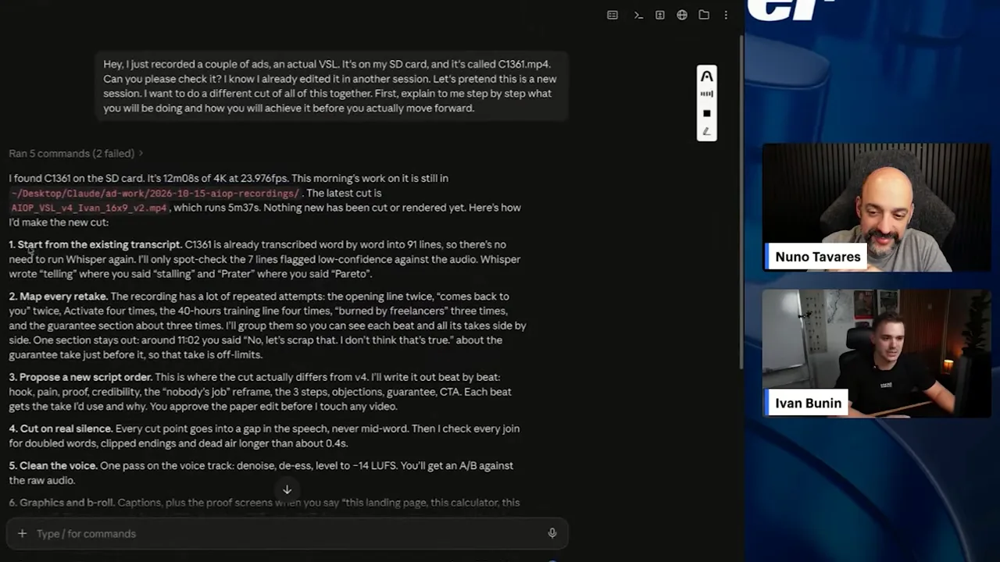
화면의 계획을 한 줄로 이으면 이래요. 사람이 끼어드는 지점은 대본 순서 승인과 마지막 검토 두 곳이에요.
flowchart LR
A["1 기존 받아쓰기"] --> B["2 재촬영 묶기"] --> C["3 새 대본 순서"]
C --> H1{{"사람 승인"}}
H1 --> D["4 진짜 무음에서 컷"] --> E["5 음성 다듬기"] --> F["6 그래픽·B-roll"] --> G["7 렌더링·점검"]
G --> H2{{"8 사람 검토 두 번"}}
1~3단계: 받아쓰기, 재촬영, 대본 순서
Whisper로 이미 91줄을 받아 둔 게 있어서 다시 돌리지 않고, 신뢰도가 낮게 표시된 7줄만 오디오와 대조해요. Whisper가 'stalling'을 'telling'으로, 'Pareto'를 'Prater'로 적은 것도 여기서 잡아요. 다음으로 같은 대목의 테이크를 묶고, 녹화 중 "아니야, 다시"라고 한 테이크는 빼요. 첫 테이크는 별로, 둘째는 괜찮고, 셋째는 별로였다면 둘째만 남기는 식이에요. 맥락상 문장 순서를 바꾸는 게 낫다면 위치도 바꿔요.
새 대본 순서는 훅 → 문제 → 증거 → 신뢰 → '누구의 일도 아니다'라는 재정의 → 3단계 → 반론 → 보장 → CTA(Call To Action)예요. 비트마다 어떤 테이크를 왜 쓸지 적어서 사람에게 먼저 보여 줘요.
작업 중에도 받아쓰기를 의심해요. 아래 화면 가운데 문단에서 Claude는 9번 훅의 받아쓰기가 '$106,000'인데 실제로는 '$136,000'이라고 말한 것을 확인하고, 자막을 $136K로 쓰겠다고 적어요.
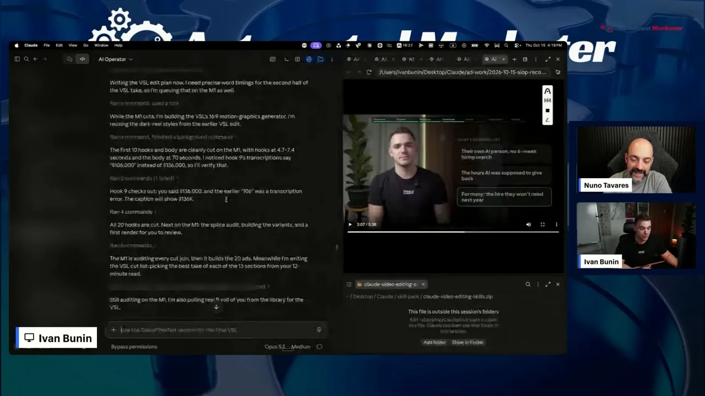
Ivan은 대본을 쓴 세션에서 그대로 편집까지 해요. 그러면 AI가 무슨 말이 나올지 이미 알아서 짐작할 필요가 없어요. VSL 대본에 "우리 사람들은 이렇게 훈련받아요" 같은 문장이 있었는데, 녹화할 때는 왜 있는지 몰랐대요. 알고 보니 AI가 그 자리에 인재 풀의 최종 프로젝트 화면을 넣으려고 미리 계획해 둔 문장이었어요.
4단계: 진짜 무음에서만 잘라요
Ivan이 가장 어렵다고 꼽는 부분이에요. 아래 그림의 주황 상자처럼 말 사이 빈 구간('GAP')을 찾고, 그 안에서만 잘라요. 받아쓰기의 단어 경계와 소리 파형을 함께 보고, 파형이 바닥으로 내려가 단어가 정말 끝났을 때만 컷 지점으로 써요.
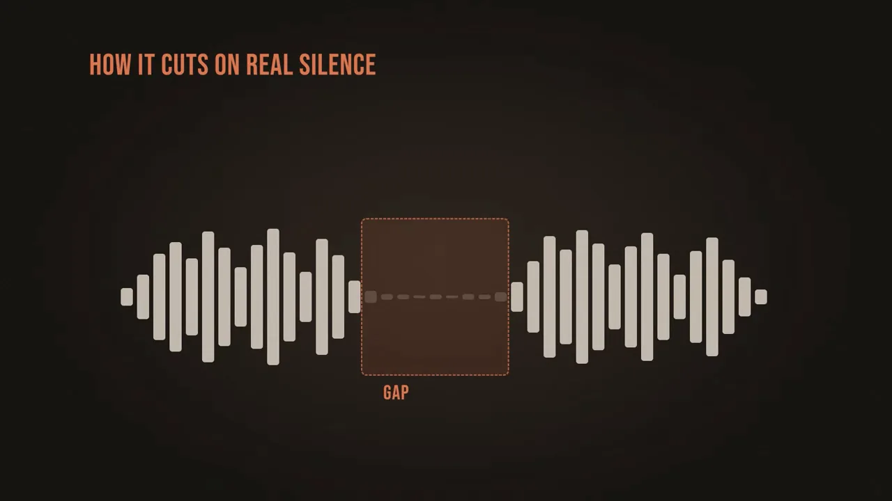
실제 실행 화면은 이 과정을 그대로 보여 줘요. EDL(Edit Decision List)이 42조각으로 만들어지고, 오른쪽 아래 체크리스트대로 컷 지점을 단어 경계에 맞추고, 멈춤을 줄인 EDL을 만들고, 러프 컷을 렌더링해요. 3분 16초짜리 결과의 오디오·비디오 길이가 맞는지 확인한 뒤, 다시 받아쓰기로 이음새를 하나씩 점검해요.
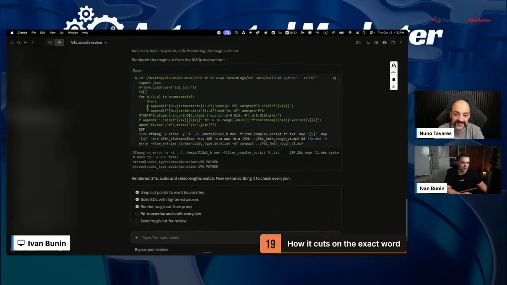
5~7단계: 음성, 그래픽, 렌더링
음성은 잡음 제거, 치찰음 줄이기, 음량을 -14 LUFS(Loudness Units relative to Full Scale)로 맞추는 처리를 한 번에 해요. 원본과 비교해 들을 수 있게 A/B도 줘요. 이건 모두 로컬이라 ElevenLabs가 필요 없고, ElevenLabs는 더 다듬고 싶을 때만 써요.
그래픽 단계에서는 로컬 받아쓰기로 자막을 만들고, "이 랜딩 페이지, 이 계산기"처럼 말하는 순간에 증거 화면을 띄워요. 자막과 튀어나오는 이미지는 HyperFrames가 그려서, 흰 글자 대신 색과 강조가 들어간 자막이 나와요. Nuno는 비슷한 일을 하는 도구로 Remotion도 있다고 덧붙여요. 렌더링은 기본 16:9이고 다른 비율로도 바꿀 수 있어요.
사람이 꼭 할 일: 스킬 검사와 두 번 검토
남이 준 스킬은 먼저 열어 보세요
Ivan은 남에게 받은 스킬을 설치하기 전에 채팅창에 끌어다 놓고 무엇이 들어 있는지 먼저 물어보라고 해요. API 키를 그대로 남겨 둔 스킬처럼 위험한 것도 여럿 봤다고 해요. 그래서 자기 스킬도 묶을 때 API 키를 빼 달라고 했어요.
편집은 두 번 검토해요
편집을 통째로 자동화하면 안 돼요. 재촬영이 많을수록 AI는 아직 실수를 해요. 아래 그림이 Ivan의 순서예요. Claude가 첫 편집을 하면, 사람이 1초 단위로 들으며 고칠 점을 말하고, 두 번째 편집에서는 다 반영됐는지만 확인해요.
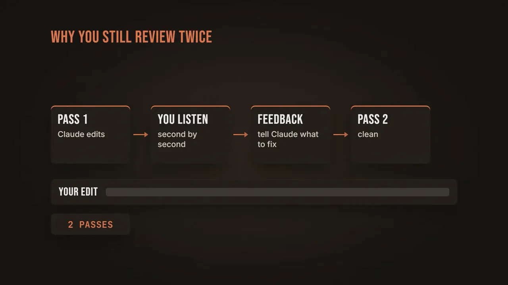
긴 촬영본에서 바이럴 클립 찾기
편집 자체는 영상 크기에 따라 5~20분 걸려요. Ivan은 릴스와 긴 영상뿐 아니라, 1시간 30분짜리 촬영본을 통째로 넣고 바이럴될 만한 순간을 찾아 자르게 한 적도 있어요. 시중 클리핑 서비스는 자체 점수 엔진으로 순간을 고르는데, 그 기준이 내 기준과 다를 수 있어요. 그래서 내 기준을 적은 스킬을 로컬에 두고 고르게 하라고 해요.
남들이 안 보여 주는 B-roll 라이브러리
Nuno는 영상 소스를 가져오는 방법을 세 단계로 정리해요. 찍고, Drive에 넣고, AI에게 폴더를 뒤져 찾으라고 해요. 그다음 질문이 B-roll은 어떻게 넣느냐예요.
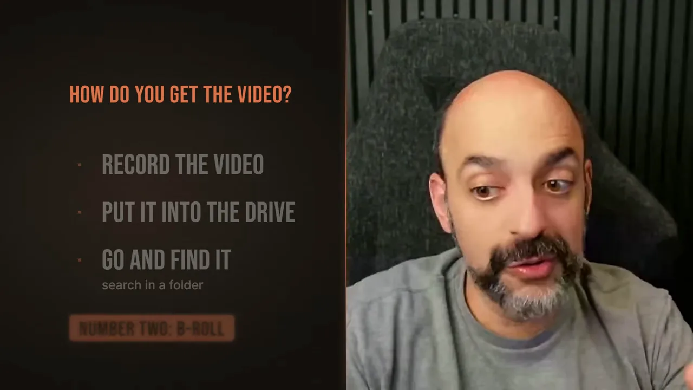
예전 방식: 폴더로 나눠 두기
예전에는 Google Drive에 B-roll 폴더를 만들고 하위 폴더로 나눴어요. 아래 화면은 B-roll 안의 Food 폴더예요. 편집자가 이 폴더들을 뒤져 맞는 클립을 직접 골랐어요.
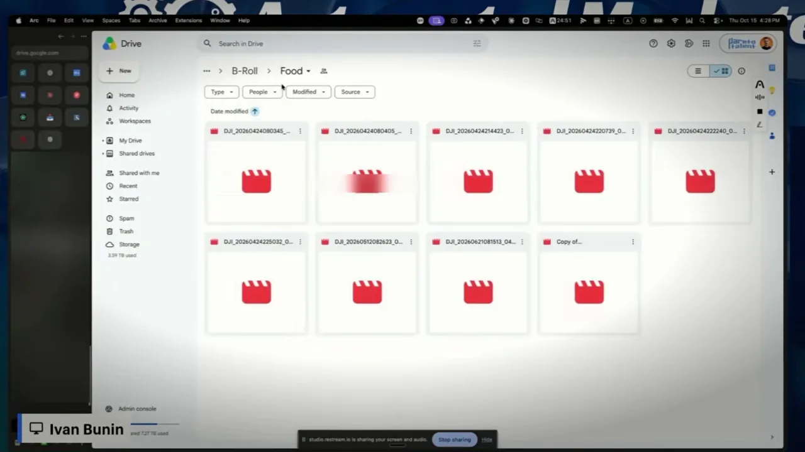
AI가 만든 B-roll 지도
Ivan은 이 폴더들을 AI에게 넘겨 클립마다 무엇이 담겼는지 알아내고 색인을 만들라고 했어요. 그 결과가 아래 B-roll Library 화면이에요. 위쪽 숫자는 클립 3,116개, 2,356분 분량, 별 4개 이상 1,218개, 세로 영상 630개, Ivan이 화면에 나오는 클립 1,926개예요. 왼쪽에는 '번아웃', '늦은 밤 작업', '가족 시간', '여행'처럼 대본의 비트에 맞춘 분류가 있어요.
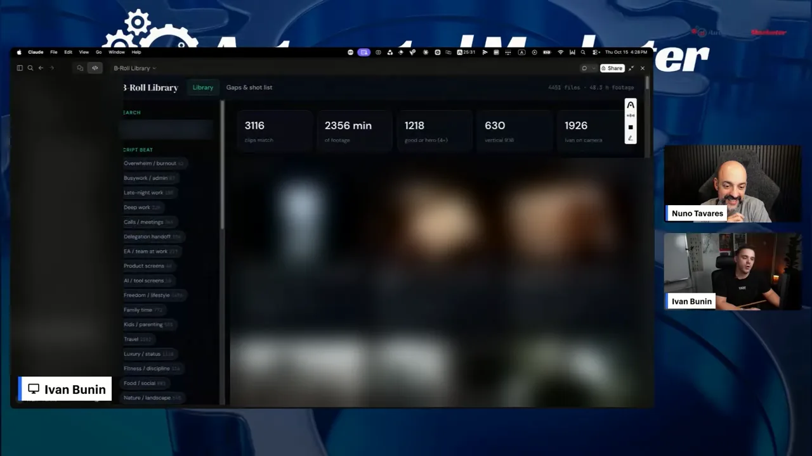
색인은 이렇게 만들어요. 클립마다 프레임 다섯 장을 뽑아 보고 무엇에 관한 영상인지('ABOUT'), 어디에 쓰면 좋은지('BEST USE')를 적어요. 누가 나오는지, 샷 종류와 화면 비율도 적고, 0~5개 별점과 태그를 붙여요. 아이가 보이면 "써도 될까요?" 하고 개인정보 확인('PRIVACY CHECK') 표시도 달아요.
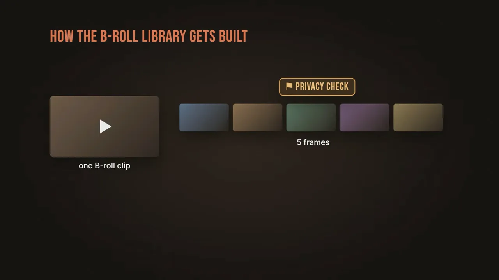
B-roll 원본은 Drive에만 있어요. Google Drive 데스크톱 앱을 깔면 Drive 파일이 내 컴퓨터 폴더처럼 보여서, Claude Code가 필요한 클립을 찾아 내려받아 편집에 써요. 마지막에 보여 준 Ivan의 이야기 영상도 같은 방식으로 B-roll을 넣었어요.
그대로 베끼지 말고 내 것으로
Nuno는 흐름을 세 줄로 정리해요. B-roll 전략을 세우고, AI가 라이브러리를 만들고, 스킬이 편집 중에 B-roll을 가져와요.
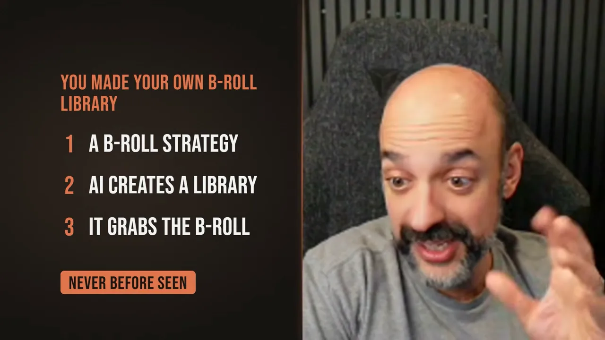
그리고 받은 스킬을 그대로 쓰지 말라고 해요. 얼굴이 안 나오는 사람, B-roll이 많은 사람, 화면 공유로 가르치는 사람은 쓰임새가 달라요. AI에게 "이 편집 스킬을 내 상황에 맞게 바꿔 줘"라고 해서 자기 것으로 만들라는 거예요.